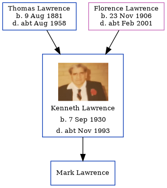

Kenneth Leonard Ernest Lawrence 1930 - c1993
[ Home ] | [ Calendar ] | [ Surnames Index ] | [ Errors ] | [ Family History ]The child of Thomas Lawrence (a builder) and Florence Lawrence, Kenneth Lawrence, the first cousin once-removed on the mother's side of Nigel Horne, was born in Eastry, Kent, England on 7 Sept 19301,2,3. He had 1 child, Mark. On 29 Sept 1939, he was living at The Lodge, Studdal, Kent, England1.
He died c. Nov 1993 in Canterbury, Kent, England3.
Parents
- Thomas William was born on 9 Aug 1881
- Florence Eva was born on 23 Nov 1906
Citations
- 1939 Register - Findmypast (was the son of the head of the household)
- England & Wales births 1837-2006 - Findmypast
- England & Wales deaths 1837-2007 - Findmypast
Media
Kenneth Lawrence
England & Wales births 1837-2006 - BMD/B/1930/4/AZ/000704/070
England & Wales deaths 1837-2007 - BMD/D/1993/12/79690273
1939 Register - TNA/R39/1822/1822J/002/13
Family Tree
Map
Generated by ged2site. Last updated on Jul 3, 2024